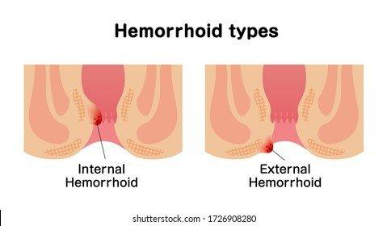

Hemorrhoids
Hemorrhoids are veins that become swollen and are usually found at the lowest part of the rectum or around the anus. Symptoms may include bleeding during bowel movements, itching near the anus, pain or discomfort, a soft lump that has formed near anus, or swelling. Causes for hemorrhoids include obesity, pregnancy, straining during bowel movements, sitting for long periods of time, chronic diarrhea or constipation, low fiber diets, or pelvic tumors.
There are two locations for hemorrhoids:
Internal hemorrhoids #
Located inside the anal cavity. These hemorrhoids may cause bleeding, mucus discharge, or difficulties passing stool.
External hemorrhoids #
Located on the area outside the anal cavity. These hemorrhoids may also cause bleeding but are usually uncomfortable and itchy.
Treatment for hemorrhoids vary based on the location and severity of the hemorrhoid. Commonly, an over the counter ointment, warm compresses, and a stool softener will be recommended as well as methods to help alleviate the itching. Sitz baths are another common solution to aid in treating hemorrhoids. It is recommended to sit in the warm water for approximately 10 to 15 minutes.
However, if these at home remedies do not help the hemorrhoids get better, the hemorrhoids may need further treatment administered by your doctor to shrink them. If this approach does not work, surgical intervention my be required. This surgical procedure is called a hemorrhoidectomy, which is the removal of the hemorrhoids.
Prevention of hemorrhoids includes drinking lots of fluids, eating more high fiber foods, and using a stool softener to prevent straining during bowel movements.